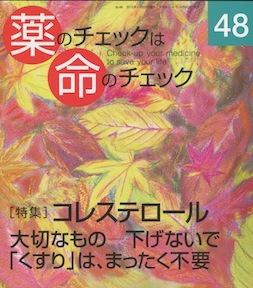

No.48 [特集] コレステロール 大切なものー下げないで 2012年10月 発行
2001年4月に発行した本誌2号の特集はコレステロール。
長生きしたければコレステロールは下げるな、総コレステロール値240-280が最長寿、と明確に論じたさきがけです。
2号の7ページに枠囲みしていることをここに記します。
|
コレステロールが高い以外、 危険因子のない人は 今すぐにでも、（低下剤を）止めよう。 医者が何と言おうと、学者が何と言おうと、 厚生労働省が何と言おうと、メーカーが何と 言おうと、マスコミ、タレント、マンガ、 保健所が、家族が何と言おうと、 あなた自身が止めればよいのです |

|
|---|
発行から11年半経ちますが、内容は色あせていません。
当時、世間一般の認識からあまりにもかけ離れた主張でしたので、これでもやや遠慮がちに述べていましたが、ますます裏付ける事実が重なり、
同調者が増え、確信を持っていえるようになりました。
コレステロールは下げなくてよい！
もくじ
Main Feature 特集 コレステロールを下げないで
■ コレステロールが低いのは不健康 浜 六郎
コレステロールが大事なのは…
①生体膜の重要な成分
②副腎皮質ホルモンや性ホルモンなどの原料
③胆汁酸の原料
■ 低コレステロールで肝がんに！
【コラム】くすりという名の刷り込み 谷田憲俊
■ コレステロール対策から糖質対策への方向転換 大櫛陽一
書評：「100歳まで長生きできるコレステロール革命」
■ ガイドラインの重大な問題点 浜崎智仁
■ 下げるとかえって寿命が縮む 浜 六郎
低下剤 評価の値打ちなし
■ 必要と安全は違う 編集部
コレステロールに関する本の紹介 編集部
トピック
■ いかなる低線量でも安全ではない 入江紀夫
■ 医療行為で被曝させられた子どもたち 木元康介
■ リリカは依存あり 浜 六郎
Series 連載
■ 医師国家試験に挑戦しよう！⑭ 木元康介
■ コーヒー無礼区 坂口啓子
■ リレーエッセイ 尊厳のある生 海老原宏美
■ 新・市民の視点 Dr.中川の被曝隠しを批判する 守田敏也
■ 医師国家試験の解答と解説
■ みんなのやさしい生命倫理(48) 生老病死⑱ 谷田憲俊
Others
■ 書評
■ 質問箱①胆石とコレステロール
②自己判断でのくすり中止、大丈夫？
③47号の間欠「歩行」は「跛行」のこと？
④病院薬剤師は患者の病態をどの程度知ることが可能なのか？
⑤頸椎症にリリカが処方されたけど大丈夫？
⑥本誌11号にマイスリーは載っていないけど、安全な薬剤？
■ 読者の声
■ バックナンバー一覧 / 書籍申込用紙
■ 編集後記/奥付